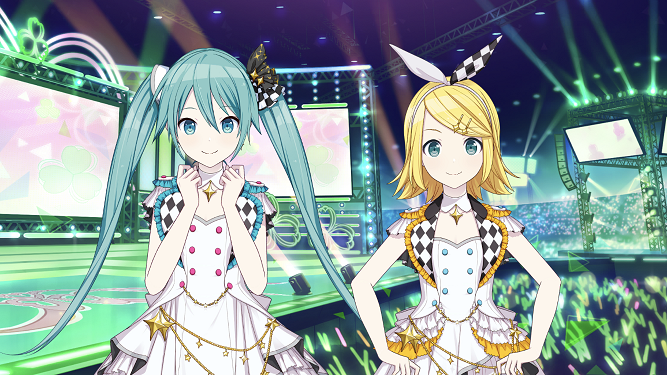
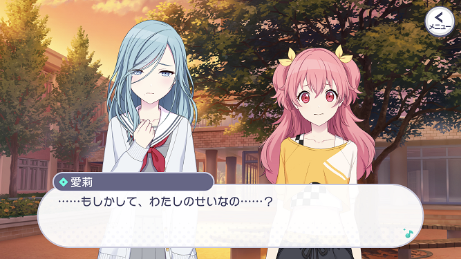
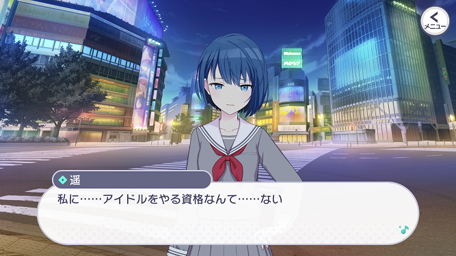

花里 みのり (はなさと みのり)
純粋でひたむきな頑張り屋。
アイドルの桐谷遥を目にしてから、アイドルを目指すようになった。
様々なオーディションを受けるが、落ち続けている。
(公式紹介文より、一部修正)
MORE MORE JUMP！
ステージのセカイ
MORE MORE JUMP！(略称: モモジャン)は、アイドルを目指す1人とアイドルを辞めた3人による異色のアイドルユニットです。
桐谷 遥 (きりたに はるか)
国民的人気アイドルグループに所属。
カリスマ的な存在で、グループ内でも絶大な人気を誇っていた。
だが、グループの解散を機に芸能界を引退し、みのりが通う学校に復学する。
(公式紹介文より、一部修正)
国民的人気アイドルグループに所属。
カリスマ的な存在で、グループ内でも絶大な人気を誇っていた。
だが、グループの解散を機に芸能界を引退し、みのりが通う学校に復学する。
(公式紹介文より、一部修正)
桃井 愛莉 (ももい あいり)
バラエティ番組などに出演し、かつて人気を博していた元アイドル。
自信家で強引な面もあるが、アイドルの仕事に愛と情熱と強い誇りを持っていた。
今では、ある事情から事務所を辞め、アイドルも引退してしまっている。
(公式紹介文より)
バラエティ番組などに出演し、かつて人気を博していた元アイドル。
自信家で強引な面もあるが、アイドルの仕事に愛と情熱と強い誇りを持っていた。
今では、ある事情から事務所を辞め、アイドルも引退してしまっている。
(公式紹介文より)
日野森 雫 (ひのもり しずく)
遥とは別の人気アイドルグループに所属している現役アイドル。
ミステリアスな大人の魅力を感じさせる容姿で、ファンを虜にしている。
しかし、グループの仲間からは妬まれることも。
愛莉とは研究生時代の同期。 (公式紹介文より、一部修正)
遥とは別の人気アイドルグループに所属している現役アイドル。
ミステリアスな大人の魅力を感じさせる容姿で、ファンを虜にしている。
しかし、グループの仲間からは妬まれることも。
愛莉とは研究生時代の同期。 (公式紹介文より、一部修正)
バーチャル・シンガー

初音ミク、鏡音リン
ミクとリンが、自らアイドルとなってステージに立ち、 みのりたちが本当の想いに気づくよう、歌って踊って、パワフルに活動している。
(公式紹介文より)
ミクとリンが、自らアイドルとなってステージに立ち、 みのりたちが本当の想いに気づくよう、歌って踊って、パワフルに活動している。
(公式紹介文より)
メインストーリーのあらすじは公式動画があるのでそちらを確認してみてください。
①みのりと遥の関係
みのりにとって遥は、アイドルを目指すようになったきっかけであり、常に心の支えにしていた存在でした。
その遥が突然芸能界を引退し、さらに遥が同じ学校の生徒だったという衝撃の事実をみのりは一気に受け止めなければなりません。
みのりが遥に抱くイメージがどのように変わっていくのか、さらに遥から見たみのりはどういった存在になっていくのかにも注目です。
その遥が突然芸能界を引退し、さらに遥が同じ学校の生徒だったという衝撃の事実をみのりは一気に受け止めなければなりません。
みのりが遥に抱くイメージがどのように変わっていくのか、さらに遥から見たみのりはどういった存在になっていくのかにも注目です。
②元アイドルが抱くステージへの想い

ステージのセカイでミクたちのライブを見た4人ですが、みのり以外の3人は不穏な表情を浮かべました。
3人はそれぞれの夢を持ってアイドルになったにもかかわらず、それぞれが何らかの思いを持ってアイドルを辞めるという選択を取っています。
なぜ彼女たちはアイドルを辞めてしまったのか、そしてアイドルの現実をみのりはどう受け止めるのでしょうか。 そして、ミクたちやみのりとともに、1人1人がこの苦悩を乗り越えられるのかがストーリーの山場になってきます。
3人はそれぞれの夢を持ってアイドルになったにもかかわらず、それぞれが何らかの思いを持ってアイドルを辞めるという選択を取っています。
なぜ彼女たちはアイドルを辞めてしまったのか、そしてアイドルの現実をみのりはどう受け止めるのでしょうか。 そして、ミクたちやみのりとともに、1人1人がこの苦悩を乗り越えられるのかがストーリーの山場になってきます。
③みのりはオーディションに受かるのか

みのりは「次のオーディションに落ちたら終わり」という条件で愛莉と雫にレッスンをしてもらうことになります。
オーディションに50回落ちたみのりは、大先輩の教えを受けて見事アイドルになることができるのでしょうか？
レッスンを経てお互いに対するイメージが変わっていく点にも注目です。
オーディションに50回落ちたみのりは、大先輩の教えを受けて見事アイドルになることができるのでしょうか？
レッスンを経てお互いに対するイメージが変わっていく点にも注目です。
メインストーリー後の展開
クリックして開く(※ネタバレ含む)
④雫の「イメージ」
MORE MORE JUMP！の4人は、事務所に入らずフリーのアイドルとして活動していくことになります。
すべてを自分たちの力でやらなければならない、そんな中で雫がこれまでアイドルとして作り上げてきたイメージが少しずつ崩れていきます。
かつては事務所や番組スタッフが「完璧なアイドル」としてのイメージを守ってきましたが、今の4人にその力はありません。
雫はどの「雫」を選び、そしてどのようにしてファンの期待に応えていくのでしょうか。
すべてを自分たちの力でやらなければならない、そんな中で雫がこれまでアイドルとして作り上げてきたイメージが少しずつ崩れていきます。
かつては事務所や番組スタッフが「完璧なアイドル」としてのイメージを守ってきましたが、今の4人にその力はありません。
雫はどの「雫」を選び、そしてどのようにしてファンの期待に応えていくのでしょうか。
⑤みのりはアイドルとして認められるのか
4人がフリーのアイドルにならざるを得なかったのも、芸能事務所がみのりという素人を認めなかったためです。
メンバーこそみのりのアイドルとしての価値を見出していますが、本人がどんなに努力しても中々ファンに認められない日々が続きます。
活動するたびに他の3人との差を実感するみのりは、自分が本当にアイドルになれるのか不安になってしまいます。
みのりが自分もファンも認めるようなアイドルになれるのか、その道筋と結果が今後のストーリーで極めて重要な要素になります。
メンバーこそみのりのアイドルとしての価値を見出していますが、本人がどんなに努力しても中々ファンに認められない日々が続きます。
活動するたびに他の3人との差を実感するみのりは、自分が本当にアイドルになれるのか不安になってしまいます。
みのりが自分もファンも認めるようなアイドルになれるのか、その道筋と結果が今後のストーリーで極めて重要な要素になります。
カバー楽曲
モモジャンのカバー楽曲はアイドルが歌うような可愛らしい楽曲が多い一方、どこか切ない楽曲(恋愛ソング含む)もいくつかあります。
特に3DMVでは1人1人のダンスに加えて全体の隊列も目を惹くポイントです。
カバー楽曲「メルティランドナイトメア」の3DMVでは、ミクを含む5人の一体感が特に印象に残ります。
歌詞もある意味ではアイドルらしくないものですが、モモジャンの世界観にうまく落とし込んだ歌声になっています。
特に3DMVでは1人1人のダンスに加えて全体の隊列も目を惹くポイントです。
カバー楽曲「メルティランドナイトメア」の3DMVでは、ミクを含む5人の一体感が特に印象に残ります。
歌詞もある意味ではアイドルらしくないものですが、モモジャンの世界観にうまく落とし込んだ歌声になっています。
また、モモジャンの可愛らしさは2DMVにも表れています。
「ハッピーシンセサイザ」はリリース当初から実装されていた楽曲ですが、その半年後に2DMVが実装され話題を呼びました。
4人のキャラクター1人1人が丁寧に可愛らしく描かれており、楽曲そのものやモモジャンの雰囲気を大切にしているMVの1つです。
「ハッピーシンセサイザ」はリリース当初から実装されていた楽曲ですが、その半年後に2DMVが実装され話題を呼びました。
4人のキャラクター1人1人が丁寧に可愛らしく描かれており、楽曲そのものやモモジャンの雰囲気を大切にしているMVの1つです。
書き下ろし楽曲
ナユタン星人さんによる「モア！ジャンプ！モア！」では、モモジャンの魅力とナユタン星人さんの魅力が上手に合わさっています。
ナユタン星人さんの楽曲で特徴的な2DMV(単色背景、大きいゴシック体の文字、キャラクターの静止画)が目を惹くほか、特に愛莉の活発な歌声が楽曲にマッチしています。
モモジャンの主軸である「明日の希望を届けるアイドル」を見事に実現した楽曲の1つでしょう。
ナユタン星人さんの楽曲で特徴的な2DMV(単色背景、大きいゴシック体の文字、キャラクターの静止画)が目を惹くほか、特に愛莉の活発な歌声が楽曲にマッチしています。
モモジャンの主軸である「明日の希望を届けるアイドル」を見事に実現した楽曲の1つでしょう。
また、DIVELAさんによる「天使のクローバー」では、一転して力強いメロディが展開されます。
歌詞の意味はもちろん、みのりのがむしゃらな踊りとアイドル経験者の余裕を感じさせる踊りの対比なども印象的です。
この3DMVからもアイドルならではの魅力、5人で歌って踊るからこその良さを感じられます。
歌詞の意味はもちろん、みのりのがむしゃらな踊りとアイドル経験者の余裕を感じさせる踊りの対比なども印象的です。
この3DMVからもアイドルならではの魅力、5人で歌って踊るからこその良さを感じられます。